1. Login the WWER system with your intranet ID and password
2. Click on “Create a new report”
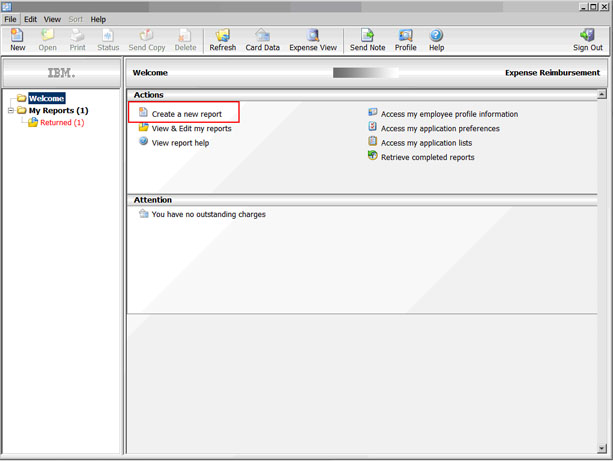
3. Choose "General business and company approved travel expenses"
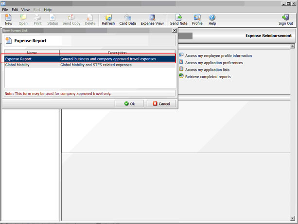
4. Input your Business purpose in format "Attend *** Training in
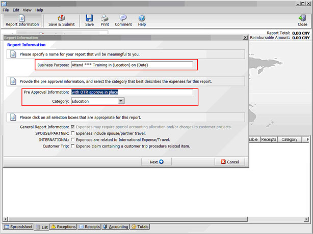
5. Click on the Finish button to continue.
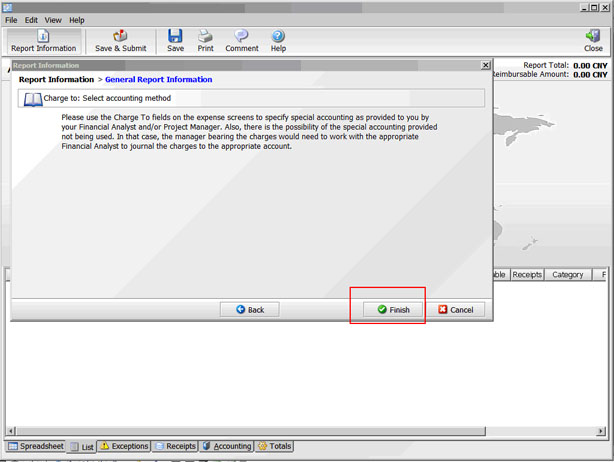
6. Click on "Out-of-Pocket Expenses" to apply your travel expenses.
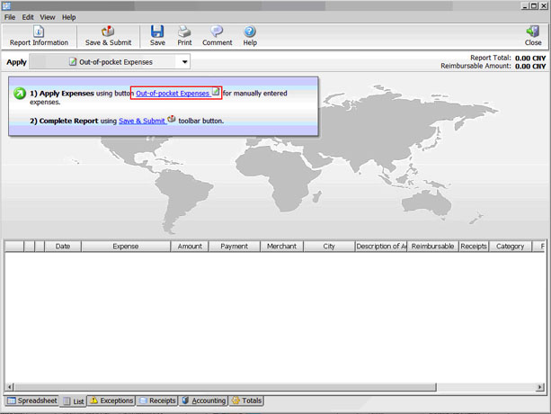
7. Usually you should apply expense of "Air Travel", "Hotel" "Taxi Expense" and "Per Diem".Click on the item you want to apply.
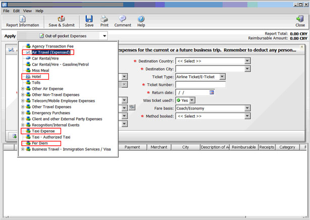
8. Fill all the required fields. Change the Cost center by click on the button beside "Charge to" field.
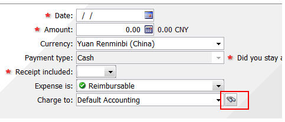
9. Enter "CN002699" in description of account. Choose "Cost center" to be charge to.Name "CN002699". Choose "Look up" then choose "Add. "No change for other items.
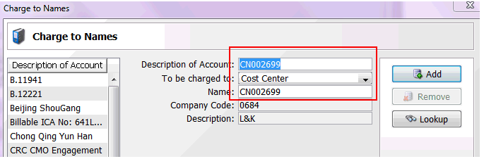
10. After finished all the required fields, please click on the "Apply" button finish this expense item. You could revise it later if needed.
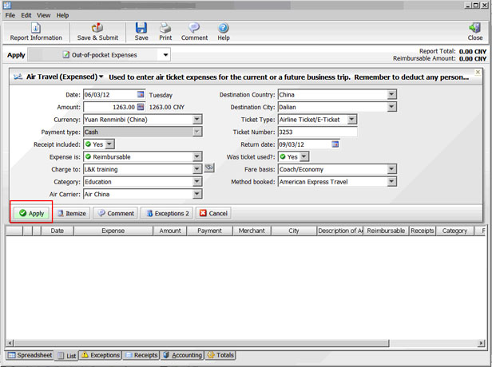
11. Click on the "Out of Pocket Expenses" to apply other expenses. Click on the "Save & Submit" to complete and submit your application.
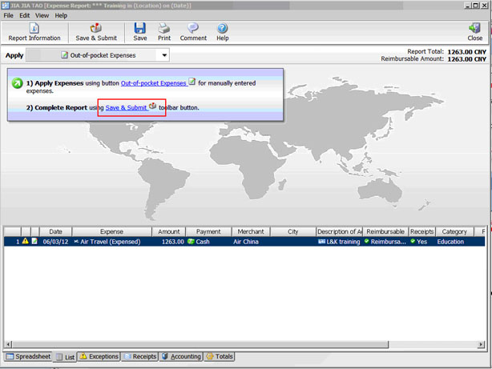
12. Please add "Yi Da YD Zhang/China/IBM" as additional reviewer in the highlighted field as below. If the OTR expense is burdened by your own department, the approval of PeM is enough.
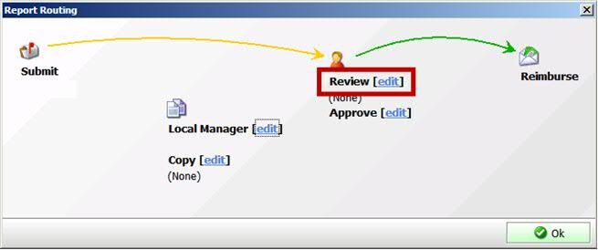